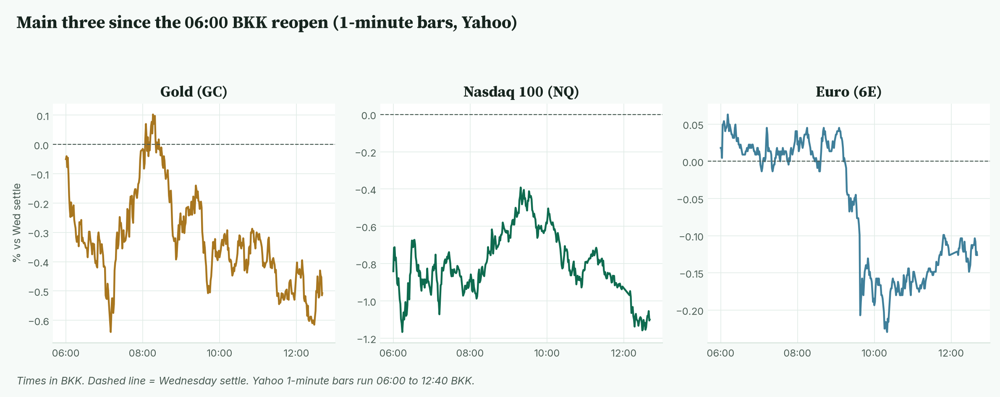
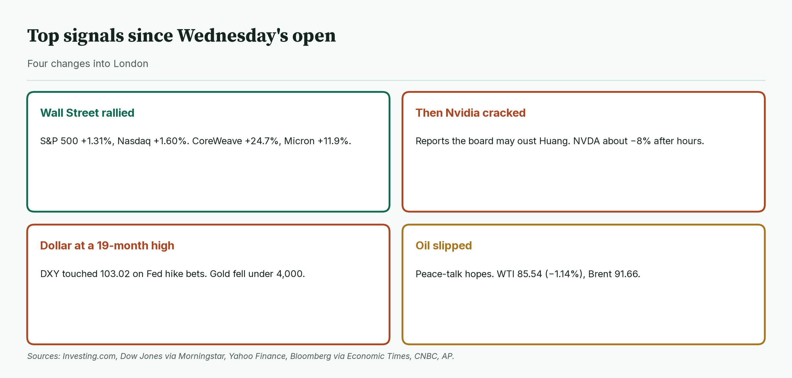
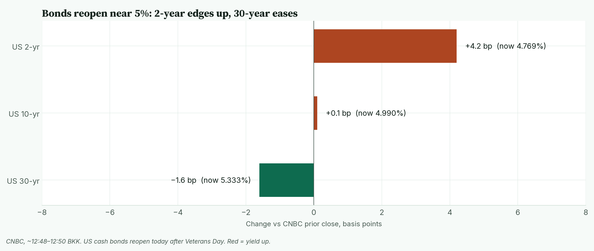
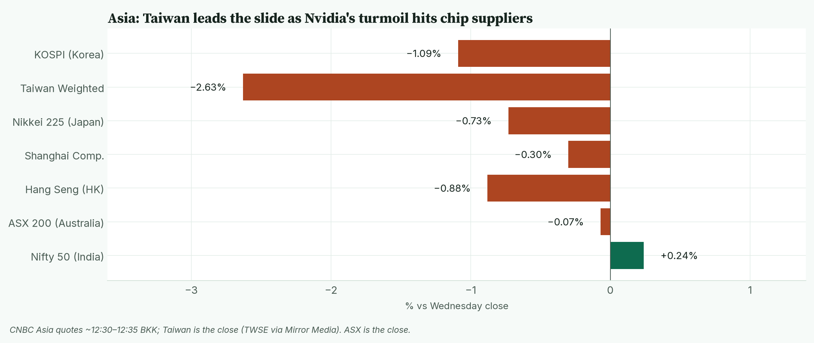
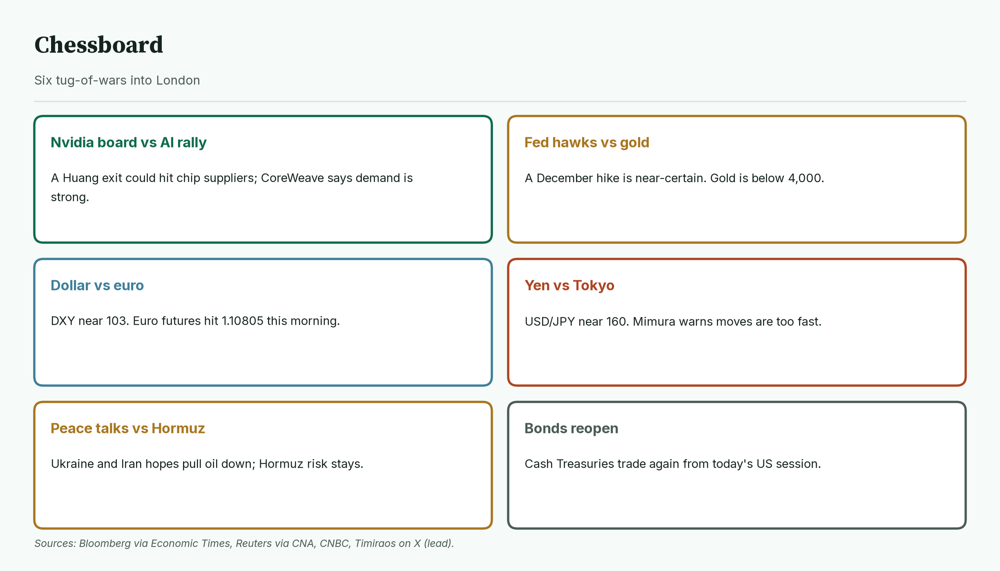
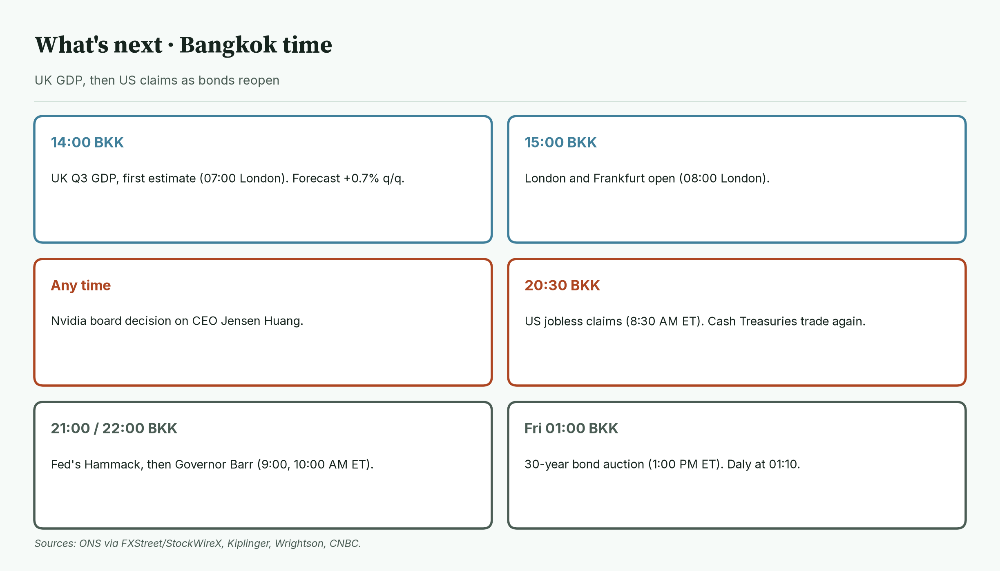
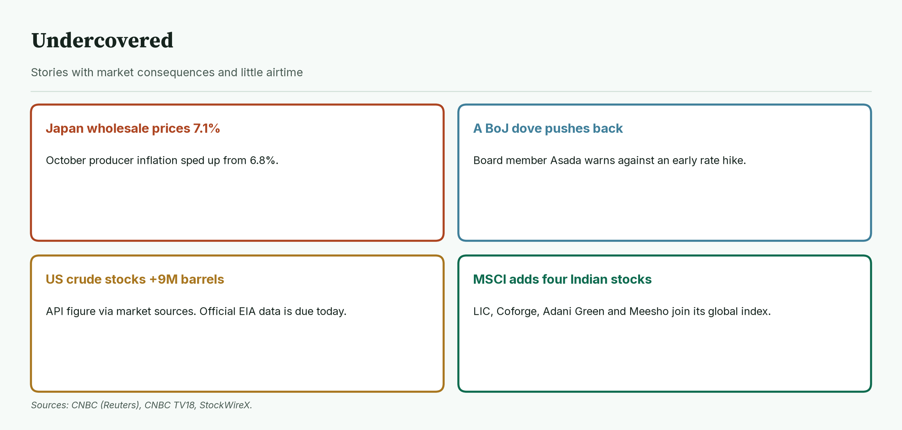
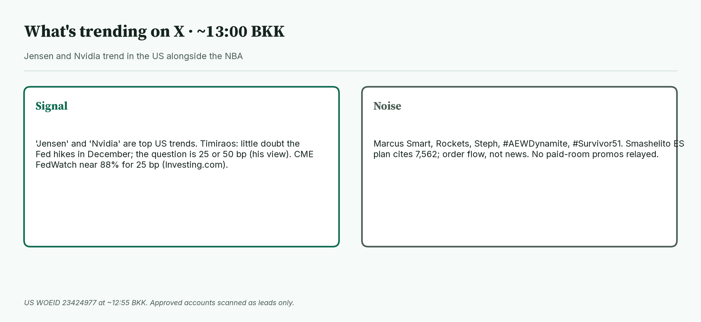

April · Market Intel, pre-London · Thu Nov 12, 2026 · ~12:55 BKK / ~05:55 London
Headline: Wall Street's AI rally got cut short after the bell. Reports that Nvidia's board may oust CEO Jensen Huang knocked Nasdaq futures to 28,161.00 (−1.10%). Gold futures slipped under 4,000 to 3,981.2 (−0.48%) as the dollar hit a 19-month high. Euro futures are 1.10930 (−0.12%). UK GDP at 14:00 BKK, any Nvidia board news, and US jobless claims at 20:30 BKK, when bonds reopen, decide the session.
So what: the Nvidia story is now a leadership question, not a gossip story. Add a near-certain December Fed hike and both tech and gold are on the back foot.
 Caption: Futures at 12:40 BKK versus Wednesday's settle. Nasdaq is the weak spot. The dollar is firm and the VIX is Wednesday's close.
Caption: Futures at 12:40 BKK versus Wednesday's settle. Nasdaq is the weak spot. The dollar is firm and the VIX is Wednesday's close.
1) Main instruments The three main contracts since the 06:00 BKK reopen, as a % move from Wednesday's settle. Nasdaq opened lower and never got back to flat. The euro dropped hard around 09:30 BKK. |
 Caption: The three main contracts since the 06:00 BKK reopen, as a % move from Wednesday's settle. Nasdaq opened lower and never got back to flat. The euro dropped hard around 09:30 BKK.
(Quotes are Yahoo Finance futures at 12:40 BKK (05:40 London), matching CNBC within 1 point. Session highs and lows use Yahoo 1-minute bars from the 06:00 BKK CME reopen (18:00 New York Wednesday).)
Caption: The three main contracts since the 06:00 BKK reopen, as a % move from Wednesday's settle. Nasdaq opened lower and never got back to flat. The euro dropped hard around 09:30 BKK.
(Quotes are Yahoo Finance futures at 12:40 BKK (05:40 London), matching CNBC within 1 point. Session highs and lows use Yahoo 1-minute bars from the 06:00 BKK CME reopen (18:00 New York Wednesday).)
- Gold futures (GC, Dec): 3,981.2, −0.48%, at 12:40 BKK. Driver: a firm dollar and bets on a December Fed hike pushed gold to its lowest since Nov 4 (CNBC). Wednesday's settle was 4,000.5. Today's range is 3,973.5 (07:10 BKK) to 4,005.9 (08:19 BKK). Spot gold is 3,976.06, −0.28% (CNBC, 12:50 BKK).
- Nasdaq 100 futures (NQ, Dec): 28,161.00, −1.10%, at 12:40 BKK. Driver: the Wall Street Journal, Reuters and Bloomberg reported Nvidia's board met late Wednesday on whether to remove Huang, and is weighing an interim CEO (Bloomberg via Economic Times, Reuters via CNA). Wednesday's settle was 28,473.25. Today's range is 28,131.75 (06:15 BKK) to 28,368.75 (09:20 BKK). It is near the low.
- Euro futures (6E, Dec): 1.10930, −0.12%, at 12:40 BKK. Driver: the dollar index touched 103.02, its highest since April 2025, on Fed hike bets (CNBC). Wednesday's settle was 1.11065. Today's range is 1.10805 (09:39 BKK) to 1.11145 (06:12 BKK). Spot euro is 1.1079 (CNBC, 12:50 BKK).
- Takeaway: Nasdaq is pinned near its low. Gold is below 4,000. The euro is holding just above this morning's low.
Context. The dollar index (DXY, the dollar against six major currencies) is 102.981, +0.07% (CNBC, 12:50 BKK). The 10-year US yield (what the US government pays to borrow for 10 years) is 4.990%, up 0.1 basis point from CNBC's prior close of 4.989% (CNBC, 12:48 BKK; a basis point is 0.01 percentage point). Tuesday's US close was 5.000%. The VIX (the "fear gauge" built from S&P 500 option prices) closed Wednesday at 17.49, −10.12% (CNBC). US oil (CL, December) is 85.54, −1.14% (12:40 BKK). S&P 500 futures (ES) are 7,605.25, −0.46% (12:40 BKK). Bitcoin is $73,523, −1.32% versus CNBC's previous close (CNBC/Coin Metrics, 12:50 BKK).
2) Top signals Four changes since Wednesday's open. Stocks rallied, Nvidia cracked after the bell, the dollar climbed and oil slipped. |
 Caption: Four changes since Wednesday's open. Stocks rallied, Nvidia cracked after the bell, the dollar climbed and oil slipped.
Caption: Four changes since Wednesday's open. Stocks rallied, Nvidia cracked after the bell, the dollar climbed and oil slipped.
- Wall Street rallied. The S&P 500 rose 1.31% and the Nasdaq Composite 1.60% to 25,466.19 (Investing.com, Dow Jones via Morningstar).
- AI names led. CoreWeave rose 24.7%, Micron 11.89% and Nvidia 2.87% to 173.73 (Motley Fool, Investing.com).
- Then Nvidia cracked. NVDA trades at 160.15, −7.82%, in overnight trading (Yahoo Finance, Blue Ocean, 12:38 BKK).
- Takeaway: one company's boardroom is now steering the whole AI trade.
3) Rates, FX and oil Yields in Asian trade before US cash bonds reopen. The 2-year is up, the 30-year is down, and the 10-year is flat near 5%. |
 Caption: Yields in Asian trade before US cash bonds reopen. The 2-year is up, the 30-year is down, and the 10-year is flat near 5%.
Caption: Yields in Asian trade before US cash bonds reopen. The 2-year is up, the 30-year is down, and the 10-year is flat near 5%.
- CNBC, 12:48 to 12:50 BKK: 2-year 4.769% (+4.2 bp), 10-year 4.990% (+0.1 bp), 30-year 5.333% (−1.6 bp).
- Fed odds: about 88% for a quarter-point December hike after the hot CPI (CME FedWatch via Investing.com). Not re-read live today. Goldman Sachs now also expects a hike early next year (CNBC).
- Mentor: when the 2-year rises and the 30-year falls, traders expect higher rates soon but slower growth later. That is called a flattening curve.
- Yen. USD/JPY is 159.69 (CNBC, 12:50 BKK). Japan's currency chief Atsushi Mimura said the yen's slide has been "too fast" (CNBC, Bloomberg). Tokyo stepped in near 160 this summer.
- Oil. January Brent is 91.66, −1.19% (CNBC, 12:40 BKK). WTI's session range is 85.20 to 86.53. Hopes for Russia-Ukraine and Iran talks weighed on prices (CNBC).
- Takeaway: the dollar is the strongest piece on the board, which leans on both gold and the euro.
4) Why it matters Asia at CNBC's midday prints. Taiwan led the slide as Nvidia's troubles hit chip suppliers. |
 Caption: Asia at CNBC's midday prints. Taiwan led the slide as Nvidia's troubles hit chip suppliers.
Nvidia is a roughly $4 trillion company (Reuters via CNA), and its chip suppliers are heavy weights in Asian indexes.
Caption: Asia at CNBC's midday prints. Taiwan led the slide as Nvidia's troubles hit chip suppliers.
Nvidia is a roughly $4 trillion company (Reuters via CNA), and its chip suppliers are heavy weights in Asian indexes.
- Taiwan's index closed −2.63% at 43,091.87 (TWSE via Mirror Media).
- KOSPI is −1.09%, Hang Seng −0.88% and Nikkei −0.73% (CNBC, about 12:30 to 12:35 BKK).
- Nvidia's board has 11 directors, and a majority vote can remove the CEO "with or without cause" (Reuters via CNA).
- Nvidia reports earnings on Nov 17, and lawmakers want a closed-door briefing from Huang on Nov 18 (Motley Fool, X News; the briefing date is a lead).
- Takeaway: a CEO change before earnings would add a new kind of risk to the AI trade.
5) Chessboard Six tug-of-wars into London. The Nvidia board and the dollar can move Nasdaq, gold and the euro fastest. |
 Caption: Six tug-of-wars into London. The Nvidia board and the dollar can move Nasdaq, gold and the euro fastest.
Caption: Six tug-of-wars into London. The Nvidia board and the dollar can move Nasdaq, gold and the euro fastest.
- Nvidia board vs AI demand. NQ is −1.10%, but CoreWeave just raised its revenue outlook to $13 billion to $13.3 billion (Yahoo Finance).
- Fed hawks vs gold. Nick Timiraos (WSJ) writes there is "little doubt" of a December hike. Gold is at 3,981.2.
- Dollar vs euro. DXY touched 103.02. 6E hit 1.10805 at 09:39 BKK.
- Yen vs Tokyo. USD/JPY 159.69, close to the 160 level where Japan intervened.
- Peace talks vs Hormuz. Brent −1.19%, but shipping through the Strait of Hormuz is still disrupted (CNBC).
- Bonds reopen. US cash Treasuries trade again today after Veterans Day.
- Takeaway: Nvidia news can land at any time. Scheduled risk starts with UK GDP.
6) Leading indicators (BKK times) UK GDP first, then US claims as bonds reopen. Fed speakers and the 30-year auction follow. |
 Caption: UK GDP first, then US claims as bonds reopen. Fed speakers and the 30-year auction follow.
Caption: UK GDP first, then US claims as bonds reopen. Fed speakers and the 30-year auction follow.
- 14:00: UK third-quarter GDP, first estimate (07:00 London, 2:00 AM ET). Forecast +0.7% on the quarter (FXStreet, StockWireX).
- 15:00: London and Frankfurt open (08:00 London).
- Any time: Nvidia board decision on Huang. No decision reported in the sources checked as of 12:55 BKK.
- 20:30: weekly jobless claims (8:30 AM ET). Cash Treasuries trade again (Kiplinger).
- 21:00: Cleveland Fed's Hammack. 22:00: Fed Governor Barr (9:00 and 10:00 AM ET) (Wrightson).
- Fri 01:00: 30-year bond auction (1:00 PM ET). Daly speaks at 01:10. New York Fed's Williams is on a panel late Thursday, US time (CNBC).
- Levels to watch: GC 3,973.5 and 4,005.9. NQ 28,131.75 and 28,368.75. 6E 1.10805 and 1.11145. DXY 103.02. WTI 85.20.
- Takeaway: Nvidia headlines decide Nasdaq's morning. The 20:30 BKK claims and bond reopen decide gold and the euro.
7) Undercovered Four stories with little airtime. They touch Japan's rates, oil supply and Indian stocks. |
 Caption: Four stories with little airtime. They touch Japan's rates, oil supply and Indian stocks.
Caption: Four stories with little airtime. They touch Japan's rates, oil supply and Indian stocks.
- Japan's wholesale inflation. It sped up to 7.1% a year in October from 6.8% (CNBC, Reuters). That adds pressure for a Bank of Japan hike.
- A Bank of Japan dove pushes back. Board member Toichiro Asada warned an early hike could hurt growth (CNBC).
- US crude stocks. The API reported a 9 million barrel build, per market sources (CNBC). Official EIA data is due today, a day late.
- MSCI's index review. It added four Indian stocks: LIC, Coforge, Adani Green Energy and Meesho (CNBC TV18).
8) What's trending on X (~12:55 BKK) Jensen and Nvidia trend in the US next to NBA names. The Fed hike story is the market signal on X. |
 Caption: Jensen and Nvidia trend in the US next to NBA names. The Fed hike story is the market signal on X.
Caption: Jensen and Nvidia trend in the US next to NBA names. The Fed hike story is the market signal on X.
- US: Marcus Smart, Jensen, #AEWDynamite, Nvidia, Rockets.
- Signal: Nick Timiraos says the question is now how fast the Fed hikes, 25 or 50 basis points. That is his reporting view, and it matches the CME odds above.
- Lead: X News on Huang's spy-linked affair cites $7.5 billion of chip sales tied to Chinese entities. I have not checked that figure, so treat it as a lead.
- Approved accounts: Smashelito posted an ES plan built around 7,562. Tavi Costa had no market post. vwaptrader1 posted only session links; no JJ / vwaptrader1 paid-room promos relayed.
- Noise: NBA names, AEW wrestling, Survivor.
Bottom line: tech has a leadership problem and gold has a dollar problem. For Jim: Nasdaq at 28,161.00 sits just above its 28,131.75 low; 28,368.75 is the ceiling. Gold at 3,981.2 sits inside 3,973.5 to 4,005.9. The euro at 1.10930 sits inside 1.10805 to 1.11145. Interpretive note: a board decision could flip Nasdaq either way, so a break of either edge matters more than the middle. That is a possible path, not a forecast. 🔮 Interpretive, not data: Mercury is said to favour messengers and leaks this week, and the tape agrees. Symbol, not signal.
Confidence: Futures levels: high (Yahoo, matching CNBC). Session ranges: Yahoo 1-minute bars from 06:00 BKK. Yields, DXY, VIX, spot gold, spot euro, yen, Bitcoin, Asia indexes: CNBC, time-stamped. Taiwan close: TWSE via Mirror Media. Nvidia overnight price: Yahoo Finance (Blue Ocean), 12:38 BKK. Fed odds: CME FedWatch via Investing.com, not live. News: Bloomberg via Economic Times, Reuters via CNA, CNBC, Yahoo Finance, Investing.com, Dow Jones via Morningstar, Motley Fool, CNBC TV18, FXStreet, StockWireX, Kiplinger, Wrightson. X posts: leads only.
Charts: /workspace/april-charts/2026-11-12/pre-london-{scoreboard,main3,rates,asia,signals,chess,leading,under,xsplit}.png |